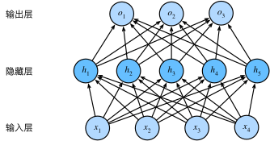
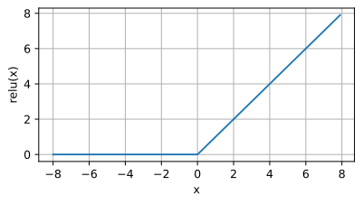
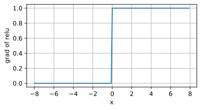
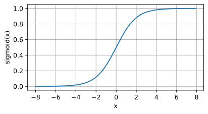
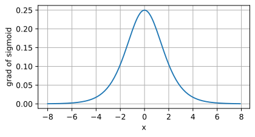
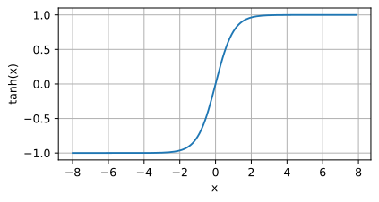
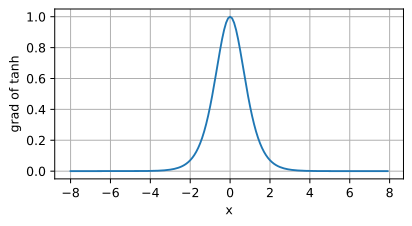

多层感知机
多层感知机：从线性模型到非线性模型
隐藏层
线性意味着单调假设，任何特征的增大都会导致模型输出的增大（对应权重为正），现实生活中往往很少有例子服从这一强假设，因此可以通过在网络中添加一个或者多个隐藏层来克服线性模型的假设，使其能够处理更加普遍的函数关系类型。要做到这一点，最简单的方法就是将许多全连接层堆叠到一起（多层嵌套），直到产生最后的输出。可以把前 $L - 1$ 层看作表示（整体输入），把最后一层看作线性预测器（整体输出）。这种架构就被称为多层感知机，简称 $MLP$。

上图就是一个简单的多层感知机，具有5个隐藏单元，这样的结构往往会带来巨大的开销（显而易见是一种 $n^2$ 级别的运算），所以在实际运用过程中需要在模型开销和性能之间做一个权衡。
模型计算
跟线性模型一样，我们用 $\mathbf{X}\in \mathbb{R}^{n\times d}$ 来表示 $n$ 个样本的小批量，每个样本都有 $d$ 个特征。对于一个具有 $h$ 个隐藏单元的单隐藏层多层感知机，用 $\mathbf{H}\in \mathbb{R}^{n\times h}$ 表示隐藏层的输出，这被称为 隐藏表示 (hidden represnetations)。这样，单隐藏层的模型输出 $\mathbf{O}\in \mathbb{R}^{n\times q}$：
$$ \begin{aligned} \mathbf{H} &= \mathbf{H}\mathbf{W}^{(1)}+b^{(1)} \\ \mathbf{O} &= \mathbf{H}\mathbf{W}^{(2)}+b^{(2)} \end{aligned} $$
我们可以添加多个隐藏层，然后通过合并，用一个仿射变换进行表示（等价于一个单层模型）：
$$
\mathbf{O} = (\mathbf{X}\mathbf{W}^{(1)} + \mathbf{b}^{(1)})\mathbf{W}^{(2)} + \mathbf{b}^{(2)} = \mathbf{X}\mathbf{W}^{(1)}\mathbf{W}^{(2)} + \mathbf{b}^{(2)} = \mathbf{X}\mathbf{W} + \mathbf{b}
$$
为了发挥多层架构的潜力，还需要一个额外的关键因素：在仿射变换之后对每个隐藏单元应用非线性的 激活函数 (activation function) $\sigma$。激活函数的输出记为 $\sigma(\cdot)$，称为 活性值 (activations)。一般来说，有了激活函数，就不可能就再将多层感知机退化成线性模型：
$$ \begin{aligned} \mathbf{H} &= \sigma(\mathbf{H}\mathbf{W}^{(1)} + \mathbf{b}^{(1)}) \\ \mathbf{O} &= \mathbf{H}\mathbf{W}^{(2)} + \mathbf{b}^{(2)} \end{aligned} $$
对于大多数激活函数来说，不仅可以对 $\mathbf{X}$ 的每一行（即每一个样本）进行操作，也可以对每一个元素进行操作。
为了构建更加通用，更加具有表达能力的模型，可以继续堆叠这样的隐藏层（多层嵌套）。
激活函数
激活函数通过计算加权和加上偏置来确定神经元是否应该被激活，它的作用是将输入信号转换为输出的可微运算。大多数激活函数都是非线性的。下面是一些常见的激活函数介绍。
ReLU函数
修正线性单元 (Rectified Linear Unit)，实现简单，在各种预测任务中表现良好，因此最受欢迎。实现非常简单，就是和 0 做 $\max$ 运算：
$$
\text{ReLU}(x) = \max(x, 0)
$$
通俗的说就是，ReLU函数通过将相应的活性值设为0，仅保留正元素并丢弃掉所有的负元素。
1 | |

由图像不难得出，当输入为正时，ReLU函数的导数为1；当输入精确为0时，ReLU函数不可导。不过这种情况通常可以忽略，因为现实生活中的工程应用的输入可能永远不会是0。
1 | |

ReLU之所以备受欢迎，是因为它求导表现的特别好，要么让参数消失，要么让参数通过（有点像滤波器），这会使得优化表现得特别好，并且减轻了困扰以往神经网络的梯度消失问题。
ReLU函数有许多变种，包括参数化 (Parameterized ReLU, pReLU) 函数，该变种函数为ReLU添加了一个线性项，因此即使参数是负的，某些信息仍然可以通过：
$$
\text{pReLU}(x) = \max(0, x) + \alpha\min(0, x)
$$
sigmoid函数
对于一个定义域在 $\mathbb{R}$ 中的输入，sigmoid 函数能将输入变换为 (0, 1) 上的输出，因此也被称为 挤压函数 (squashing function)，它将范围 (-inf, inf) 中的任意输入压缩到区间 (0, 1) 中的某个值：
$$
\text{sigmoid}(x) = \dfrac{1}{1 + \text{exp}(-x)}
$$
sigmoid早期被科学家们关注，因为它是一个平滑、可微的阈值单元模拟。然而，sigmoid在隐藏层中已经比较少被使用了，大多数情况下会被更简单、更容易训练的 ReLU 代替。但还是较常在循环神经网络中被使用。
1 | |

可见，当输入接近于0时，sigmoid接近线性变换。
其导数为：
$$
\dfrac{d}{dx}\text{sigmoid}(x) = \dfrac{\text{exp}(-x)}{(1 + \text{exp}(-x))^2} = \text{sigmoid}(x)(1 - \text{sigmoid}(x))
$$
sigmoid函数的导数图像如下所示。注意，当输入为0时，sigmoid函数的导数达到最大值0.25；而输入在任一方向上越远离0点时，导数越接近0。
1 | |

tanh函数
与sigmoid函数类似，tanh(双曲正切)函数也能将其输入压缩转换到区间(-1, 1)上。 tanh函数的公式如下：
$$
\text{tanh}(x) = \dfrac{1 - \text{exp}(-2x)}{1 + \text{exp}(-2x)}
$$
1 | |

可见，当输入接近于0时，tanh接近线性变换。形状类似于sigmoid函数。
tanh的导数为：
$$
\dfrac{d}{dx}\text{tanh}(x) = 1 - \text{tanh}^2(x)
$$
tanh函数的导数图像如下所示。 当输入接近0时，tanh函数的导数接近最大值1。 与我们在sigmoid函数图像中看到的类似， 输入在任一方向上越远离0点，导数越接近0。
1 | |
